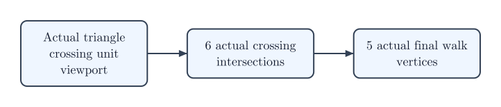
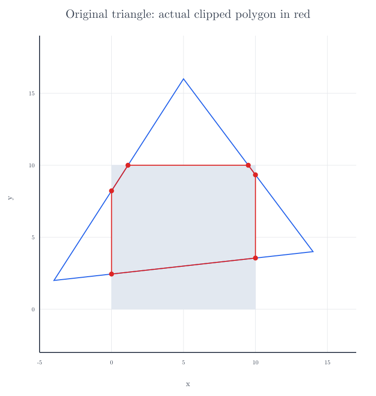
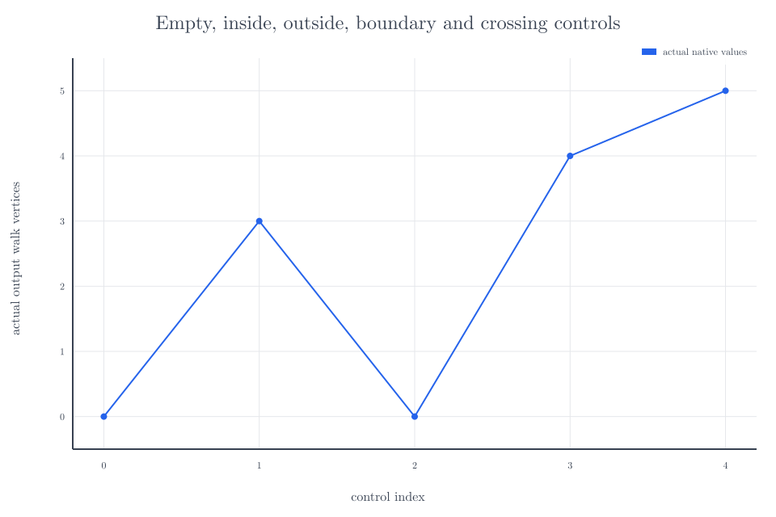
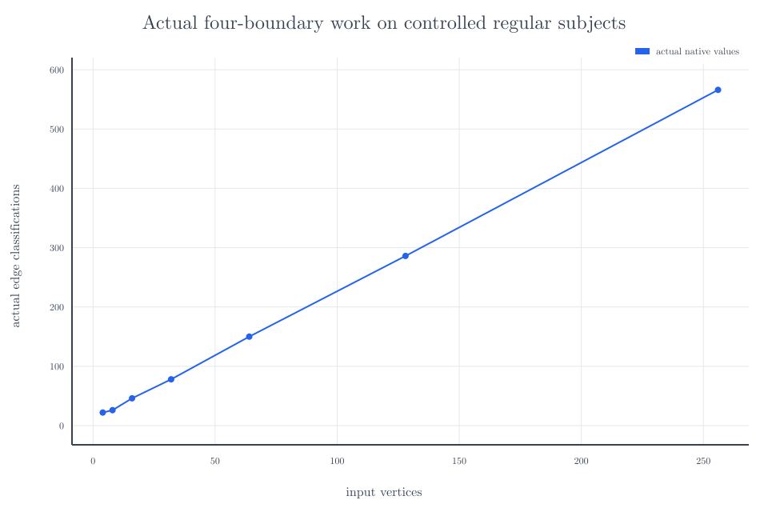

Sutherland-Hodgman: actual half-plane emissions and clipped walks
Abstract
Polygon clipping carries a complete subject walk through one rectangle half-plane at a time. Actual inside/outside branches, intersection emissions and post-phase walks retain the original triangle experiment.
Mechanism and mathematical scope
For each closed-walk edge previous->current, both inside emits current; leaving emits one crossing; entering emits crossing then current; both outside emits nothing. Feed the actual output into left,right,bottom,top successively. Boundaries count as inside and repeated points may remain. A convex subject yields its convex clipped polygon. Concave subjects can represent disconnected components through coincident bridge edges in a single output walk; this is not a general multipolygon topology-repair operation. With four fixed boundaries the total walk size/work is linear in input size, with a bounded constant expansion.
A tiny actual producing history
The table and native concept diagram read the same producing execution. Every block below is a complete editable C++ program.
#include <dm/dm.hpp>
int main() {
namespace a = dm::algorithms;
namespace g = dm::graphics;
std::filesystem::create_directories("build");
auto r = a::sutherland_hodgman_trace({{-1, 0}, {2, 0}, {0, 2}}, 0, 0, 1, 1);
std::print("| actual boundary | previous | current | previous inside | current inside | actual emitted " "points |\n| ---: | --- | --- | --- | --- | --- |\n");
for (const auto &s : r.steps)
std::print("| {} | `{}` | `{}` | {} | {} | `{}` |\n", s.boundary,
s.previous, s.current, s.previous_inside, s.current_inside,
s.emitted);
g::Diagram concept_diagram(48, 1100);
concept_diagram.node("n0", {0, 0}, "Actual triangle crossing unit viewport");
concept_diagram.node("n1", {5, 0},
std::format("{} actual crossing intersections",
r.intersections));
concept_diagram.node("n2", {10, 0},
std::format("{} actual final walk vertices",
r.polygon.size()));
concept_diagram.edge("n0", "n1").edge("n1", "n2");
concept_diagram.save_svg("build/sutherland_hodgman_tiny.svg");
}| actual boundary | previous | current | previous inside | current inside | actual emitted points |
|---|---|---|---|---|---|
| 0 | (0, 2) | (-1, 0) | true | false | [(0, 2)] |
| 0 | (-1, 0) | (2, 0) | false | true | [(0, 0), (2, 0)] |
| 0 | (2, 0) | (0, 2) | true | true | [(0, 2)] |
| 1 | (0, 2) | (0, 2) | true | true | [(0, 2)] |
| 1 | (0, 2) | (0, 0) | true | true | [(0, 0)] |
| 1 | (0, 0) | (2, 0) | true | false | [(1, 0)] |
| 1 | (2, 0) | (0, 2) | false | true | [(1, 1), (0, 2)] |
| 2 | (0, 2) | (0, 2) | true | true | [(0, 2)] |
| 2 | (0, 2) | (0, 0) | true | true | [(0, 0)] |
| 2 | (0, 0) | (1, 0) | true | true | [(1, 0)] |
| 2 | (1, 0) | (1, 1) | true | true | [(1, 1)] |
| 2 | (1, 1) | (0, 2) | true | true | [(0, 2)] |
| 3 | (0, 2) | (0, 2) | false | false | [] |
| 3 | (0, 2) | (0, 0) | false | true | [(-0, 1), (0, 0)] |
| 3 | (0, 0) | (1, 0) | true | true | [(1, 0)] |
| 3 | (1, 0) | (1, 1) | true | true | [(1, 1)] |
| 3 | (1, 1) | (0, 2) | true | false | [(1, 1)] |

The retained original experiment
#include <dm/dm.hpp>
int main() {
namespace a = dm::algorithms;
namespace g = dm::graphics;
std::filesystem::create_directories("build");
const std::vector<a::Point2> tri{{-4, 2}, {14, 4}, {5, 16}};
auto r = a::sutherland_hodgman_trace(tri, 0, 0, 10, 10);
std::print("Original triangle clipped to[0,10]x[0,10].\n\n| actual processed boundary | actual complete " "output walk |\n| ---: | --- |\n");
for (const auto &s : r.history)
std::print("| {} | `{}` |\n", s.boundary, s.after);
std::vector<double> x, y;
for (auto[px, py] : r.polygon) {
x.push_back(px);
y.push_back(py);
}
auto chart = g::RPlot::create();
chart.polygon({0, 10, 10, 0}, {0, 0, 10, 10}, {226, 232, 240}, true).polygon({-4, 14, 5}, {2, 4, 16}, {37, 99, 235}, false).polygon(x, y, {220, 38, 38}, false).points(x, y, {220, 38, 38}, 5).size(760, 800).margins(80, 40, 72, 88).xlim(-5, 17).ylim(-3, 19).title("Original triangle: actual clipped polygon in red").x_label("x").y_label("y");
chart.save_svg("build/sutherland_hodgman_original.svg");
}Original triangle clipped to[0,10]x[0,10].
| actual processed boundary | actual complete output walk |
|---|---|
| 0 | [(0, 8.222222222222221), (0, 2.4444444444444446), (14, 4), (5, 16)] |
| 1 | [(0, 8.222222222222221), (0, 2.4444444444444446), (10, 3.555555555555556), (10, 9.333333333333334), (5, 16)] |
| 2 | [(0, 8.222222222222221), (0, 2.4444444444444446), (10, 3.555555555555556), (10, 9.333333333333334), (5, 16)] |
| 3 | [(1.1428571428571432, 10), (0, 8.222222222222221), (0, 2.4444444444444446), (10, 3.555555555555556), (10, 9.333333333333334), (9.5, 10)] |

Explicit controls
#include <dm/dm.hpp>
int main() {
namespace a = dm::algorithms;
namespace g = dm::graphics;
std::filesystem::create_directories("build");
std::vector<std::vector<a::Point2>> cases{{},
{{.1, .1}, {.9, .1}, {.1, .9}},
{{2, 2}, {3, 2}, {2, 3}},
{{0, 0}, {1, 0}, {1, 1}, {0, 1}},
{{-1, 0}, {2, 0}, {0, 2}}};
std::vector<double> x, y;
std::print("| control | input vertices | actual final vertices | actual intersections |\n| ---: | ---: " "| ---: | ---: |\n");
for (std::size_t i = 0; i < cases.size(); ++i) {
auto r = a::sutherland_hodgman_run(cases[i], 0, 0, 1, 1);
x.push_back(i);
y.push_back(r.polygon.size());
std::print("| {} | {} | {} | {} |\n", i, cases[i].size(),
r.polygon.size(), r.intersections);
}
auto plot = g::RPlot::create();
plot.lines(x, y, "actual native values", {37, 99, 235}).points(
x, y, {37, 99, 235}, 4).title("Empty, inside, outside, boundary and crossing controls").x_label("control index").y_label("actual output walk vertices");
plot.save_svg("build/sutherland_hodgman_controls.svg");
}| control | input vertices | actual final vertices | actual intersections |
|---|---|---|---|
| 0 | 0 | 0 | 0 |
| 1 | 3 | 3 | 0 |
| 2 | 3 | 0 | 0 |
| 3 | 4 | 4 | 0 |
| 4 | 3 | 5 | 6 |

Actual selected work and sensitivity
#include <dm/dm.hpp>
int main() {
namespace a = dm::algorithms;
namespace g = dm::graphics;
std::filesystem::create_directories("build");
std::vector<double> x, y;
std::print("| regular subject vertices | actual edge classifications | actual intersections | final " "vertices |\n| ---: | ---: | ---: | ---: |\n");
for (std::size_t n : {4, 8, 16, 32, 64, 128, 256}) {
std::vector<a::Point2> poly;
for (std::size_t i = 0; i < n; ++i) {
double t = 2 * std::numbers::pi * i / n;
poly.emplace_back(std::cos(t) * 2, std::sin(t) * 2);
}
auto r = a::sutherland_hodgman_run(poly, -1, -1, 1, 1);
x.push_back(n);
y.push_back(r.edge_visits);
std::print("| {} | {} | {} | {} |\n", n, r.edge_visits, r.intersections,
r.polygon.size());
}
auto plot = g::RPlot::create();
plot.lines(x, y, "actual native values", {37, 99, 235}).points(
x, y, {37, 99, 235}, 4).title("Actual four-boundary work on controlled regular subjects").x_label("input vertices").y_label("actual edge classifications");
plot.save_svg("build/sutherland_hodgman_work.svg");
}| regular subject vertices | actual edge classifications | actual intersections | final vertices |
|---|---|---|---|
| 4 | 22 | 8 | 8 |
| 8 | 26 | 8 | 4 |
| 16 | 46 | 8 | 4 |
| 32 | 78 | 8 | 4 |
| 64 | 150 | 8 | 4 |
| 128 | 286 | 8 | 4 |
| 256 | 566 | 8 | 4 |

API and interpretation
All finite subject vertices and ordered finite rectangle bounds are checked, including empty subjects. Zero-width/height rectangles are allowed; resulting degenerate walks are retained. Checked native widened Cohen-Sutherland intersections are reused rather than duplicated. No arbitrary convex clipping polygon, self-intersection classification, deduplication or multi-component decomposition is promised.
Reusable producers, fixtures and histories live in the canonical C++ library. Captured records own their values and do not come from a separate report replay. Selected counters and record/scalar policies are specified at their API boundaries; they are not peak-byte or wall-time budgets. Synthetic structural inputs are controlled fixtures for these mechanisms.
References
Verified in the shared ten-document batch: 72 scoped native cases;20 directly
instrumented ASan/UBSan cases;82 executable public examples;327/327 definitions
across23 full scopes;10 hovers;3797 independent records/1769203 checks;frozen
valid-input comparisons across all ten families with cyclic-tree validation
correction recorded;12 checkout/installed standalone headers and linked
ten-family consumer;40 executed programs and40 inspected figures with both
exports. Receipts:
/mnt/projects/datamunge/build/mepml-conversion/batch-384-393/.